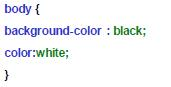
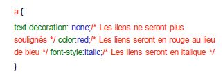

- Principe des CSS
- Format CSS
- Appel d’un fichier .css
- Directement dans le header du fichier HTML
- Appliquer un style à des balises
- Exemple CSS
- Des commentaires dans CSS
- Utiliser les classes
- L'attribut id
- Les balises universelles
- Exemple
- Imbrications de balises
- Taille du texte
- Polices
- Exemple
- Alignement simple
- L'indentation: la mise en retrait du texte
- Effets de style
- Les majuscules en CSS
- La décoration
- Les couleurs
- La notation hexadécimale
- La méthode RGB (Red-Green-Blue)
- Le fond
- La couleur de fond
- Exemple
- L'image de fond
- Effets sur les liens
- Les pseudo-formats
- Au passage de la souris
- Au moment du clic
- Première lettre et première ligne
- Retrait des listes
- Exemple
- Représentation de la puce
- Pour les listes non ordonnées (ul)
- Pour les listes ordonnées (ol)
- Changer l’image de la puce
- Dimensionnement et positionnement
- Mise en page
- Tableaux
- Formulaires
• Le fond ne désigne pas forcément le fond de toute une page web.
• On peut aussi appliquer un fond uniquement aux titres, ou aux paragraphes, ou encore à certains mots d’un paragraphe.
• Il existe 2 types de fonds :
• Les fonds comportant une couleur.
• Les fonds comportant une image de fond.
- La couleur de fond
• Pour indiquer une couleur de fond, on utilise la propriété CSS background-color.Vous pouvez taper le nom d'une couleur, l'écrire en notation hexadécimale ou encore utiliser la méthode RGB.
• Pour indiquer la couleur de fond de la page web, il faut travailler sur a balise (body) qui correspond à toute la page web.

• Si on applique une couleur de fond noire et une couleur de texte blanche à la balise
- Exemple
- L'image de fond
• La propriété permettant d'indiquer une image de fond est background-image
•Comme valeur, on doit lui mettre url("nom_image.png")
• Votre fond n'est pas forcément en PNG, il peut aussi être en JPEG ou en GIF.
• L'adresse indiquant où se trouve l'image de fond peut être en absolu (http://...) ou en relatif (fond.png).
• Si on veut appliquer une image de fond à toute la page, on doit utiliser la balise (body)
Effets sur les liens
